工作台：商家与评委实走、改造和验收
2026-10-23 · Asia/Shanghai · 实际Edge浏览器截图
商家主链和已有文案诊断入口已真实走通。核心改造是把资料、问题、处理动作、原文依据和版本连接起来。以评委视角，真实请求、原文和前后差异可直接展示，不依赖虚构分数或效率提升承诺。
本轮记录中可统计 24 次真实模型响应、154,026 tokens。不是账单金额或后续稳定性保证。查看脱敏调用摘要
真实来源：Westford Mill W201官方商品；Amazon实时导入商品。
| 步骤 | 商家操作 | 结果与边界 |
|---|
| 1 | 进入与选择任务 | 通过：日常界面只展示真实商品/任务，旧演示保留历史但不可用于新任务。 |
| 2 | 提取和确认规格 | 通过：真实DeepSeek提取，人工核对结构化字段，未知项留空。 |
| 3 | 生成英文并独立审核 | 通过：两次真实调用，规格、引用、版本分别保留。 |
| 4 | 理解并处理问题 | 通过：下一步面板、分类说明、真实模型修复；不提供模板替代。 |
| 5 | 查看依据原文 | 通过：可展开保存原句；仍需人工判断材料适用范围。 |
| 6 | 补资料与原任务复检 | 通过：只修改确认资料；旧版本不变，未知项仍待补。 |
| 7 | 对话/手动修改与对照 | 通过但模型遵从有边界：已验证实际标题变更和手动修正；无变更会明确提示。 |
| 8 | 导出并交接 | 通过：实际下载纯文案和报告，复制具体待补清单；不等于正式上架。 |
改造前 · 进入工作台
旧演示记录混入统计，新建默认选择演示商品。商家难以区分实际可用资料；评委看到的业务依据也不清楚。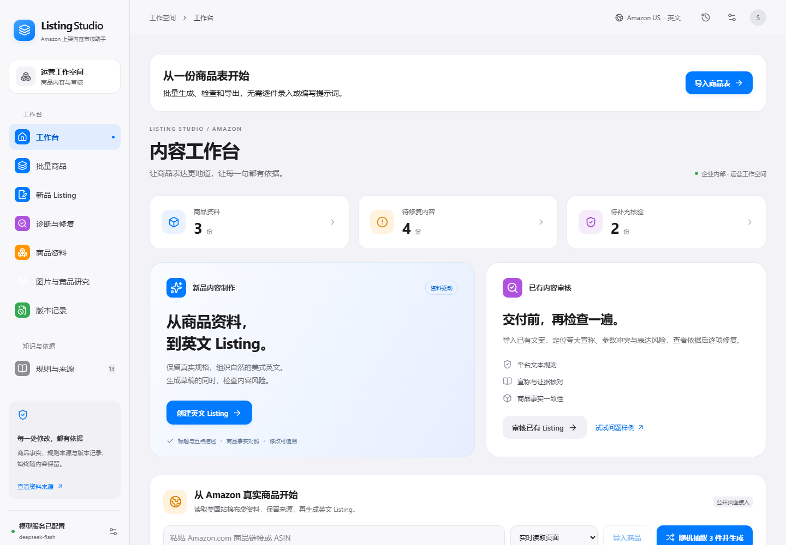
改造前 · 审核结果
正确单位和尺寸表达被误报；尺寸值显示为对象字符串。证据信息压在处理动作之前，查找下一步要滚动很长距离。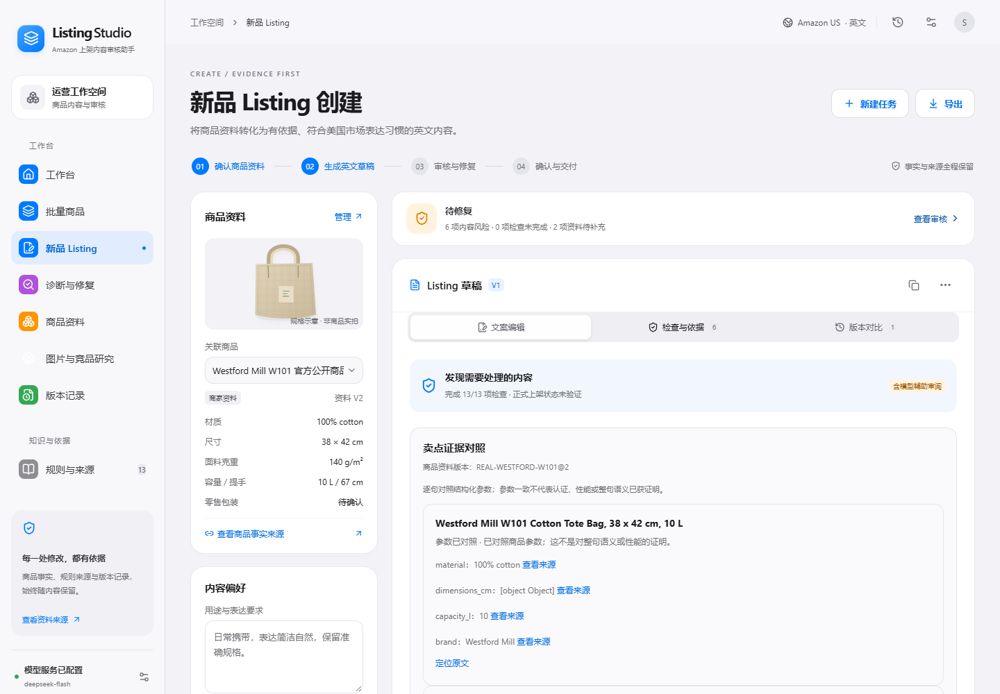
改造前 · 来源核对
来源窗口只有说明和链接，看不到保存的原文。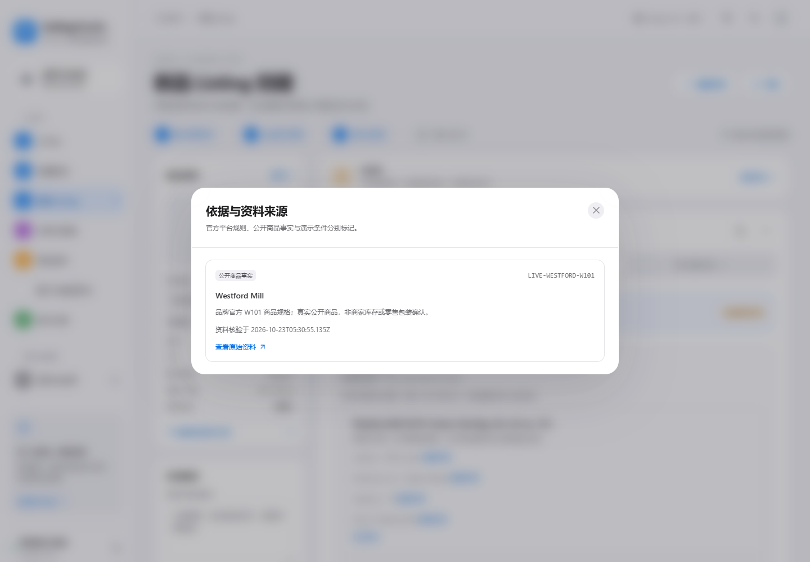
改造前 · 版本比较
原句改写会改变问题ID，相同规则和字段的问题被计成“已解决+新增”。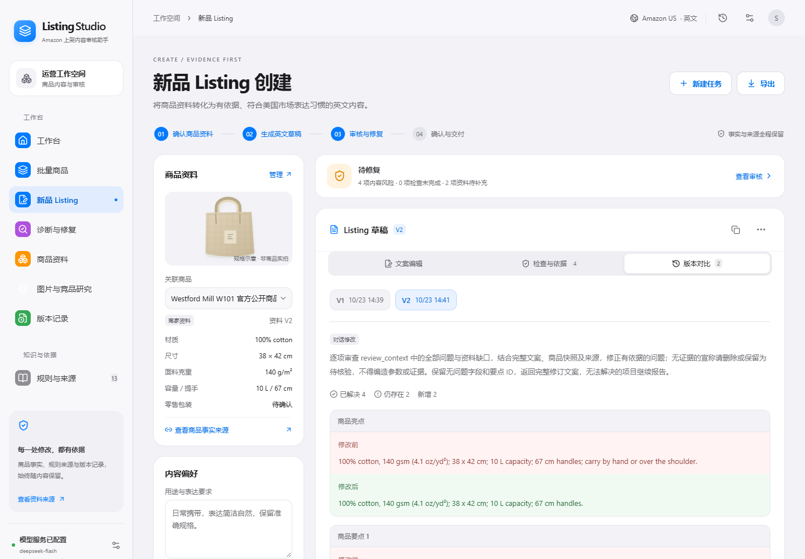
改造前 · 导出
没有独立的纯英文文案文件，运营需自行分离内部说明。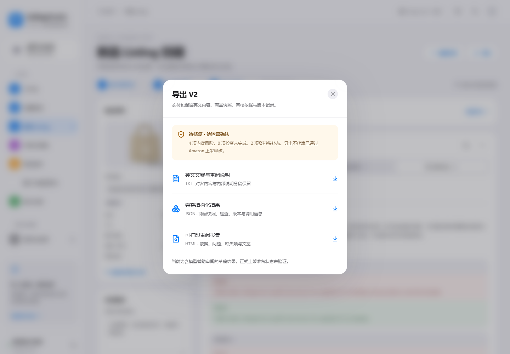
第1–2步 · 真实资料提取与人工确认
实时读取W201品牌官方规格，粘贴资料后由真实DeepSeek提取。宽高、克重、容量、提手进入可编辑字段；颜色与零售件数保持空白。供应商装箱数不成为零售数量。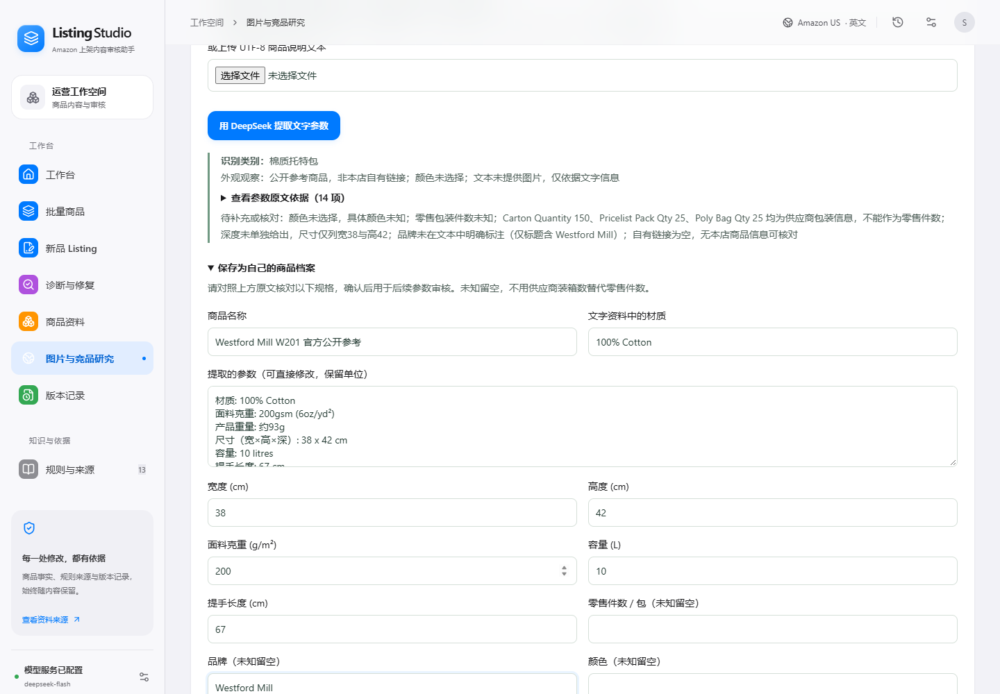
第3–4步 · 生成、审核与下一步
新增处理面板优先显示风险和待补项。真实文案不变复检后，5项误报消除；不是删除正确参数来降低问题数。截图为本轮相应时刻的真实状态，最终规则结果见末图。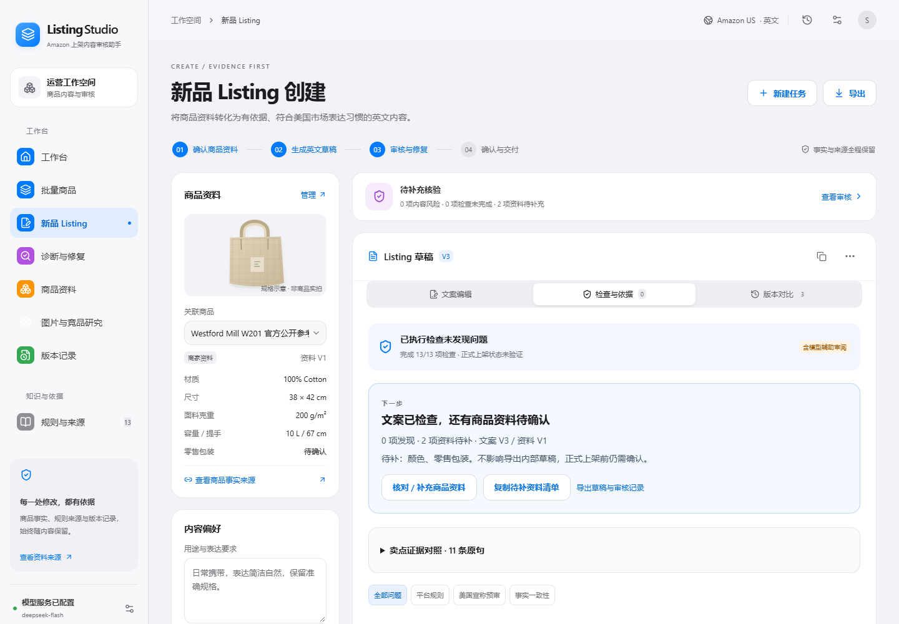
第5步 · 追溯原文
可展开实际提取时保存的原句；商家确认、公开商品、平台规则分别标记。来源存在不等于认证或性能已获证明。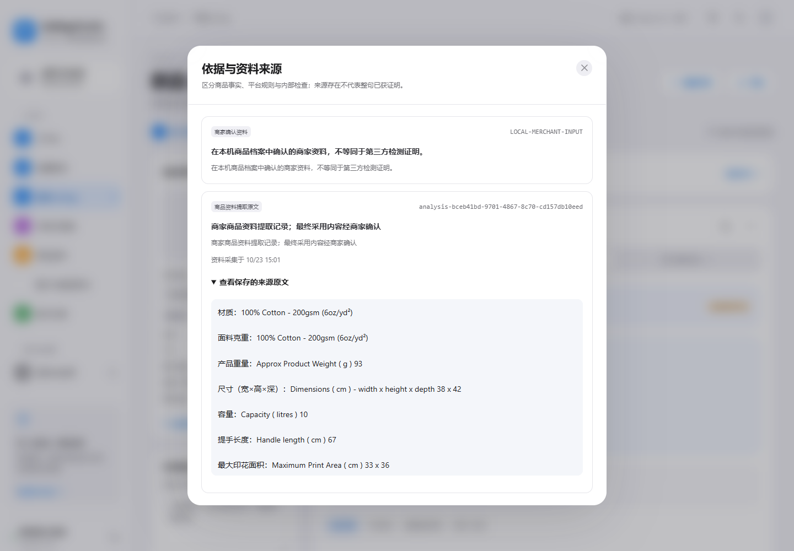
第6步 · 补资料与复检
窗口只围绕当前商品，补充原文折叠，规格集中可见。原任务保存新版本；颜色、零售包装未知时保持待补，不捏造来完成流程。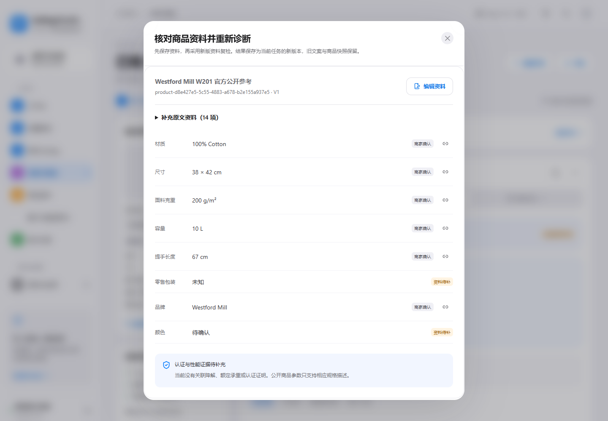
第7步 · 修改及版本核对
真实模型改写标题，其他字段保持不变；也实测了手动编辑并调用模型复检。一次口语修改未改变正文，已补无变更提示。字符目标也不能仅凭模型口头承诺，需看计数和实际差异。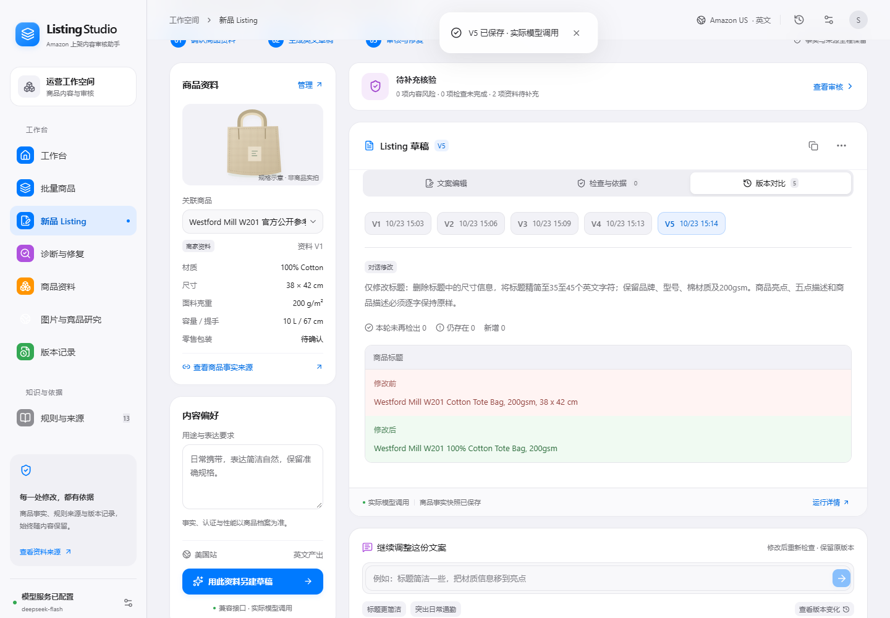
第8步 · 实际下载交付文件
实际下载纯英文TXT和HTML审阅报告。TXT不混入内部说明；报告保留待补项，未宣称平台已通过。补充验证 · 手机与键盘
390px视口实测document宽度390，无横向溢出。验证弹窗Tab焦点在内部，Escape返回原入口；不据此声称完整无障碍合规。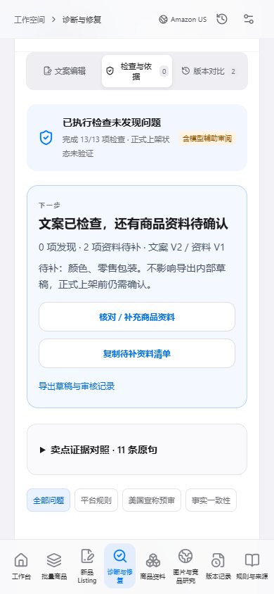
补充验证 · Amazon实时导入
实际读取DALIX B07Q3B7SG8页面并导入，未使用快照回退。页面销售状态只是当时观察，不是库存或持续抓取成功率保证。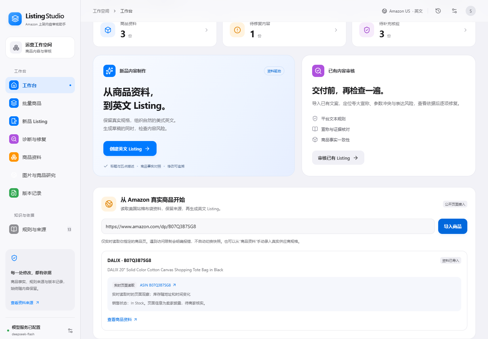
最终 · 当前规则下的独立诊断
真实已有文案从独立入口重新审核；最终0项发现、颜色和零售包装2项待补。旧规则记录明确显示审核需更新，历史快照不覆盖。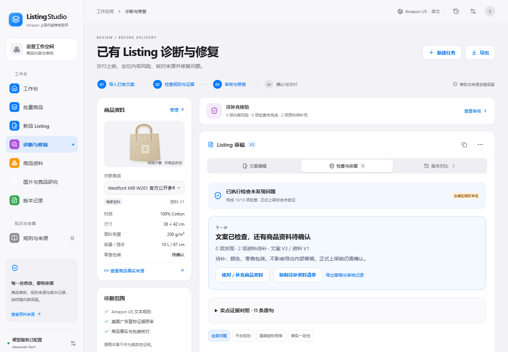
最新实现使用 merchant-v4 规则、merchant-v3 提示版本；历史规则不会伪装成已更新结果。原始响应、私有数据库和密钥均不在本报告或分享包中。